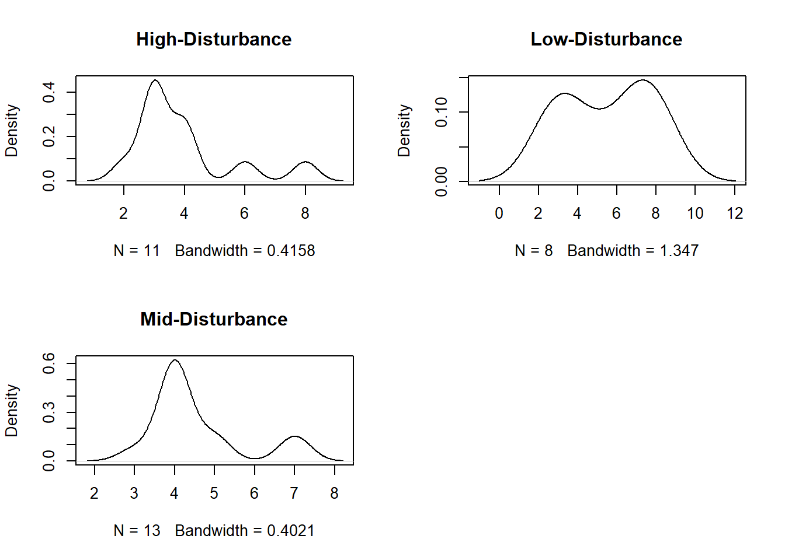
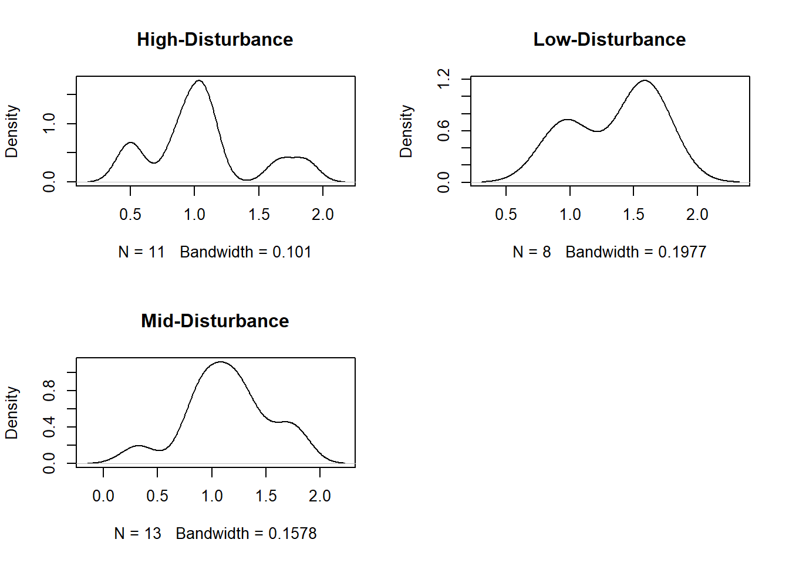

install.packages('dunn.test')Lab 1 Code
Setting up R
This week we’ll use three packages: ggplot2, dplyr, and dunn.test. You might not yet have dunn.test installed yet. Remember, if you need to install a package, you only need to do it once. So in your console (the main bottom tab of RStudio) run:
However, each time we run R, we’ll need to load all our packages
library(ggplot2)
library(dplyr)
library(dunn.test)Accessing the data
You can download the data from the course github org: link
Download and save the data in your files/folder
Then load it into R. I’m going to name it raw_data
setwd('C:/Users/abart/OneDrive/Documents/UofSC/Classes/BIOL570L')
raw_data <- read.csv('2023_WS2_Data-Share.csv') # whatever you named iNow let’s take a look and make sure the structure is as we expect:
str(raw_data)'data.frame': 146 obs. of 4 variables:
$ Region : chr "High-Disturbance" "High-Disturbance" "High-Disturbance" "High-Disturbance" ...
$ Quadrat: int 1 1 1 1 2 2 2 3 3 3 ...
$ Taxa : chr "A" "B" "C" "D" ...
$ Count : int 1 2 7 2 2 9 4 2 3 7 ...Look’s good to me!
Analyzing the data
This week the question is somewhat straightforward but the code will get quite complex. This guide walks through some of the process of building out the code. If you just want to get to plots and core statistical analyses, you don’t need all this code. I will clearly distinguish between the required and the “bonus” portions. However, I encourage you to skim through all sections as it will inform the process.
The main object is to test the intermediate disturbance hypothesis. For this, we have three forest regions: High-Disturbance, Mid-Disturbance, Low-Disturbance. Thus, our predictive variable will be “Region” (which is categorical with three levels). Our response variable should test if the three regions are significantly different from one another in some metric of biodiversity. What is expected for this week’s worksheet, is to select ONE metric to test the hypothesis. Our three possible response variables are (1) Species richness (integer/count data), (2) Shannon’s H (continuous), and (3) Pileou’s D (continuous).
So in all cases, we’ll have a categorical predictor variable with a continuous response. Because our categorical variable has three levels, we’ll need to use an ANOVA test, or its non-parametric equivalent. In all cases, we will be comparing are the regions on average significantly different from one another. So we’ll need to calculate the metric for each quadrat, then average by region. Thankfully, much of the dplyr syntax (code) we’ve seen is very useful for these operations.
Regardless of metric, we’ll make a simple barplot and run a statistical analysis to assess if the observed differences in the barplot are significantly different.
A. Species Richness
First, let’s run the analysis for species richness. This is the most straightforward from a coding perspective. We just need to count the number of unique species in each quadrat.
This could feasibly be done by hand but it is easier in R. Also, it would not be feasible if we had more regions and we’re less likely to make a mistake!
The first step will be to make a data.frame with just counts the number of unique species in each quadrat. We can do that with dplyr I’ll name it richness_df.
Inside this complex chunk of code the key operation comes in the summarize function, where I create the new column richness. Note that here, I’m saying “take the raw data, group it by region and quadrat, then for each group, calculate richness in a new column”. We can calculate richness by finding the unique taxa and then counting them (length).
richness_df <- raw_data |>
group_by(Region, Quadrat) |> #group these
summarise(richness = length(unique(Taxa))) # make a column for the # of unique taxaYou can compare the new richness data.frame to your raw data. Take a look with these functions:
View(richness_df)
View(raw_data)This is a good opportunity to spot-check some of the math. Does the high-density, quadrat 1 have the correct number?
A.1 Plotting Species Richness
To make our plot, we’ll need to make a summary data frame which has the mean richness per region with standard deviation. I’ll call it richness_plot_df
We can use dplyr:
richness_plot_df <- richness_df |>
group_by(Region) |>
summarize(mean_richness = mean(richness),
sd_richness = sd(richness))Now we can make our plot:
ggplot(richness_plot_df) +
geom_bar(aes(x = Region, y = mean_richness),
stat = 'identity', fill = 'black')+
geom_errorbar(aes(x = Region, ymin = mean_richness,
ymax = mean_richness + sd_richness),
width = 0.5, color = 'black')+
labs(x = "Region",y = "Mean Richness")+
theme_bw()Great! It looks pretty good!
A.1b Plotting Bonus
One issue with the plot above is I don’t like the order of the categories. When we look back to the lab reading, Connell’s figure has the categories as a gradient from high-to-mid-to-low.
So let’s reorganize the plot to match. Here we need to reassign factor levels in the data frame then it will work in ggplot:
# What if I want my figures in a different order?
richness_plot_df$Region <- factor(richness_plot_df$Region, levels = c("High-Disturbance",
"Mid-Disturbance",
"Low-Disturbance"))Now we actually can just run the same plot code:
ggplot(richness_plot_df) +
geom_bar(aes(x = Region, y = mean_richness),
stat = 'identity', fill = 'black')+
geom_errorbar(aes(x = Region, ymin = mean_richness,
ymax = mean_richness + sd_richness),
width = 0.5, color = 'black')+
labs(x = "Region",y = "Mean Richness")+
theme_bw()p1 = ggplot(richness_plot_df) +
geom_bar(aes(x = Region, y = mean_richness),
stat = 'identity', fill = 'black')+
geom_errorbar(aes(x = Region, ymin = mean_richness,
ymax = mean_richness + sd_richness),
width = 0.5, color = 'black')+
labs(x = "Region",y = "Mean Richness")+
theme_bw()
watermark_plot(p1)A.2 Richness Analysis
In the project plan we suggested running an ANOVA to compare between the categories. However, ANOVAs assume that our (response) data are normally distributed.
Technical note: ANOVAs are just extensions of linear models. There are several assumptions but normality of residuals is the main one. This is not normality of the data, but are the data within a group normally distributed around the mean. However, typically if the data are non-normal then the residuals will be non-normal at small sample sizes. At larger sample sizes this is less of a concern due to the Central Limit Theorem.
So first we need to see if the species richness are normally distributed within each group. We can do this a number of ways but the easiest is to see if the density distribution looks normal. Note these are not plots we’d share with anyone, or put in your worksheet but it is a quick way for us to see:
Here, I’m using base R graphics and some advanced approaches just to keep it short. Don’t worry about all these details. Here, we’re primary concerned about the question of normality:
par(mfrow = c(2,2)) # set up plotting window in 2x2 grid
for(group in unique(richness_df$Region)) {
density(richness_df$richness[richness_df$Region == group]) |>
plot(main = group)
}
Looking at the figures, it seems that non-normality might be a concern. So we’ll need to use a non-parametric test. The alternative to an ANOVA in this case is a Kruskal-Wallace test.
The kruskal-wallace test is similar to our chi-squared test in that it asks: “Are there any differences between the distributions of the groups”.
Let’s run this test in R:
kruskal.test(richness_df$richness ~ richness_df$Region) # Tell's us it is significantly different
Kruskal-Wallis rank sum test
data: richness_df$richness by richness_df$Region
Kruskal-Wallis chi-squared = 3.8114, df = 2, p-value = 0.1487As of thursday’s data addition, we do not have a significant difference in species richness between groups (p = 0.149, kruskall-wallis test).
B. Shannon’s H Diversity Metric
Calculating the Shannon-Wiener index is a little more complicated from an R perspective. Look at the formula:
\[ H = -\sum_{i = 1}^{R}{\frac{n_i}{N}ln\frac{n_i}{N}} \]
We need to caculate for each quadrat, the total number of species (\(N\)) and the proportion of each \(i^{th}\) species in that quadrat, the natural log of that proportion and then sum it up for all species in that quadrat!
Again you could brute-force this calculation or do it in Excel. For this lab it might be feasible, but what if you had years of data! This is where R is useful.
B.0 Bonus
Let’s first calculate H for just one region, one quadrat by “hand”. I’ll create a data frame of just one quadrat
# just for one case:
quadrat_1 <- raw_data |>
filter(Region == "Low-Disturbance", Quadrat == '1')
quadrat_1 Region Quadrat Taxa Count
1 Low-Disturbance 1 A 1
2 Low-Disturbance 1 B 1
3 Low-Disturbance 1 C 3Now we can calculate all those values. Note here, I’m using p as the term for \(\frac{n_i}{N_i}\)
p <- quadrat_1$Count / sum(quadrat_1$Count) # create counts
lnp <- log(p)
-sum(p * lnp)[1] 0.9502705B.0 Calculating H for all the data
Here, we will create our own function for calculating H. Honestly, this is more advanced than your typical intro-to-R but it makes the analysis easier on the whole. So let’s roll with it.
# We can write a function to do this repeatedly!
diversity_calculator <- function(count) {
p <- count / sum(count) # create counts
lnp <- log(p)
H <- -sum(p * lnp)
return(H)
}If you did the bonus above, you can check the function works but just running on the quadrat 1 data!
Now we can use same code were familiar with to calculate H, just with our own function inside summarize. I’ll create a new data.frame called diversity_df
diversity_df <- raw_data |>
group_by(Region, Quadrat) |>
summarise(H = diversity_calculator(Count))B.1 Plotting Diversity
Let’s make our summary data frame to plot with. I’ll call it div_plot
div_plot <- diversity_df |>
group_by(Region) |>
summarize(mean_H = mean(H),
sd_H = sd(H))Now let’s plot it. Note that I’m included the code in here to reorganize the order of the categories from the A.1b section:
# What if I want my figures in a different order?
div_plot$Region <- factor(div_plot$Region, levels = c("High-Disturbance",
"Mid-Disturbance",
"Low-Disturbance"))
ggplot(div_plot) +
geom_bar(aes(x = Region, y = mean_H),
stat = 'identity', fill = 'black')+
geom_errorbar(aes(x = Region, ymin = mean_H,
ymax = mean_H + sd_H),
width = 0.5, color = 'black')+
labs(x = "Region",y = "Shannon's H")+
theme_bw()B.2 Analyzing H
Let’s take a look at if normality might be a concern for this dataset:
par(mfrow = c(2,2)) # set up plotting window in 2x2 grid
for(group in unique(diversity_df$Region)) {
density(diversity_df$H[richness_df$Region == group]) |>
plot(main = group)
}
Again, non-normality might be a considerable concern. So let’s use the kruskal-wallace test.
kruskal.test(diversity_df$H~diversity_df$Region)
Kruskal-Wallis rank sum test
data: diversity_df$H by diversity_df$Region
Kruskal-Wallis chi-squared = 1.9782, df = 2, p-value = 0.3719Here, this test suggests that there is no significant difference between the regions. So we can write that as our result. (This might change with added data).
C. Evenness
Finally let’s calculate pileou’s evenness. Again, this might create some new code challenges but it will make it easier in the long-run.
Remember the formula:
\[ D = 1 - \sum_{i=1}^{R}{\frac{n_i(n_i-1)}{N(N - 1)}} \]
C.0 Bonus
Here, we can calculate the value for just one quadrat. Here, I’m using the quadrat_1 data frame I created in B.0 bonus. If you skipped that go back and make sure you have quadrat_1 in your environment.
n = quadrat_1$Count
N = sum(quadrat_1$Count)
# Solve for D
1 - sum((n*(n-1))/(N*(N-1)))[1] 0.7C.0 Calculating Pileou’s evenness
Here’s the self-defined function which will calculate pileou’s evenness:
pileou_calculator <- function(count) {
n = count
N = sum(count)
D = 1 - sum((n*(n-1))/(N*(N-1)))
return(D)
}Now we can calculate it for all quadrats. I’ll call it evenness_df
# calculate for all!
evenness_df <- raw_data |>
group_by(Region, Quadrat) |>
summarize(D = pileou_calculator(Count))C.1 Plotting Evenness
We’ll need to make a summary dataframe first. I’ll call it evenness_plot
evenness_plot <- evenness_df |>
group_by(Region) |>
summarize(mean_D = mean(D),
sd_D = sd(D))Now we can plot that dataframe.
# What if I want my figures in a different order?
evenness_plot$Region <- factor(evenness_plot$Region, levels = c("High-Disturbance",
"Mid-Disturbance",
"Low-Disturbance"))
ggplot(evenness_plot) +
geom_bar(aes(x = Region, y = mean_D),
stat = 'identity', fill = 'black')+
geom_errorbar(aes(x = Region, ymin = mean_D,
ymax = mean_D + sd_D),
width = 0.5, color = 'black')+
labs(x = "Region",y = "Pileou's D")+
theme_bw()C.2 Analyzing D
First, let’s check the normality of our groups:
par(mfrow = c(2,2)) # set up plotting window in 2x2 grid
for(group in unique(evenness_df$Region)) {
density(evenness_df$D[evenness_df$Region == group]) |>
plot(main = group)
}Again, non-normality might be a concern so let’s use the kruskall.wallace test
kruskal.test(evenness_df$D~evenness_df$Region)
Kruskal-Wallis rank sum test
data: evenness_df$D by evenness_df$Region
Kruskal-Wallis chi-squared = 4.1779, df = 2, p-value = 0.1238Again there is no difference in evenness between the regions.